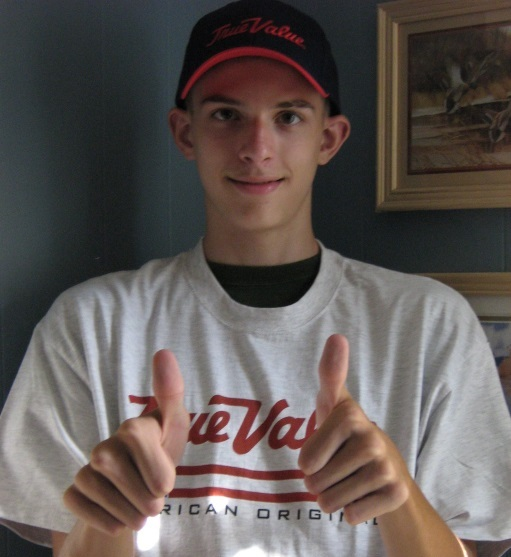

2005
My first job started when I was 15 years old. I mowed our neighbors lawn along with my brother. I was overly attentive to detail and scared of any failures.
2006
I got my first "real" job after applying and interviewing with Williams Hardware. I was very shy and socially inept. My confidence grew and grew as I interacted with more people very day. My boss was very encouraging and took me under his wing. I became very comfortable with social interaction, even to the point of loving it.

2014
After arriving in Chicago to start the second half of my collegiate career, I obtained a job within the first week. This job was with the office of campus life. I performed duties in a few different locations on campus including the recreation center, welcome desk, and suite.
2015
I wanted to get an on-campus job that was more relevant to my major in Information Technology so I applied to a computer lab support position. I was hired almost instantly and started to learn some real-world networking on the job. I was able to get two projects off the ground that had previously been unifinished.
2016
I applied to many internships and started to get more comfortable with the interview process. After a one hour interview with TransUnion, I was accepted into a 12 week summer internship program. And that's where I am in life.